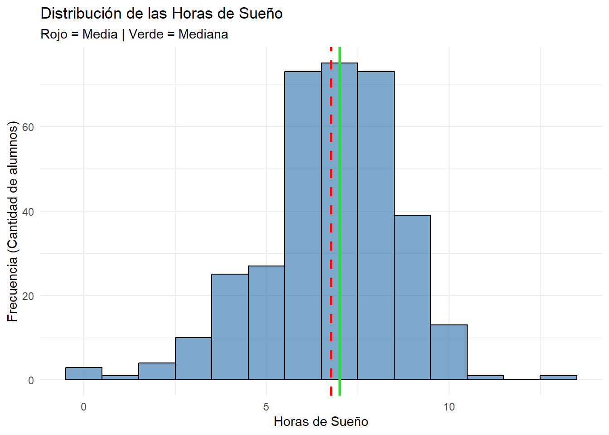
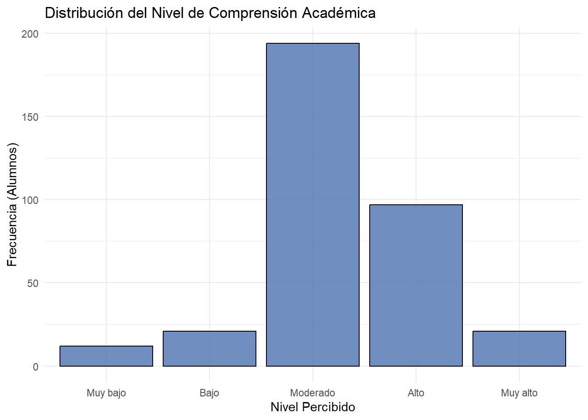
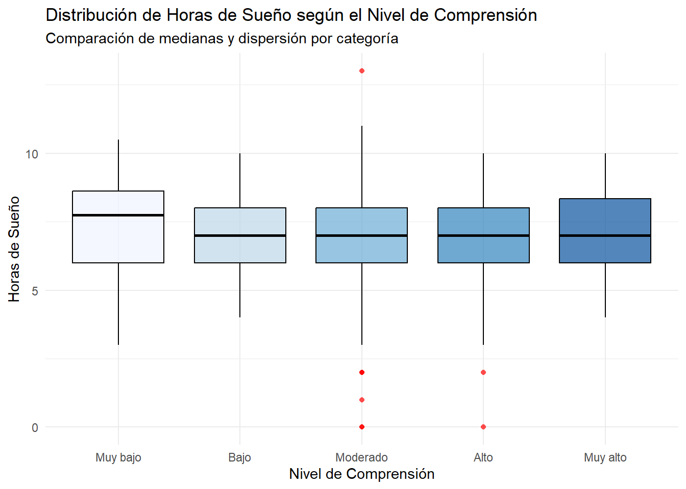

Nuestro tema en cuestion trata sobre la relación entre las horas de sueño, el uso de Inteligencia Artificial y el rendimiento académico en nuestra sección de Estadística y Probabilidades. Es relvevante discutir al respecto ya que nos da la oportunidad de investigar de forma más analítica como varía el desempeño de un grupo universitario. Factores como el sueño o la IA tienen su impacto en la vida diaria de los estudiantes, y es posible que se puedan encontrar alguna tendencia que involucre ambas en el rendimiento académico.
Tema
Relación entre las horas de sueño, el uso de Inteligencia Artificial y el rendimiento académico de los estudiantes de Estadística y Probabilidades 1, sección 1 durante el ciclo 2026-2
Objetivos
Objetivo general
Evaluar la relación entre las horas de sueño, el uso de herramientas de inteligencia artificial y el rendimiento académico de los estudiantes de Estadística y Probabilidades 1, sección 1, durante el ciclo 2026-2.
Objetivos específicos
Analizar la relación entre la cantidad de horas de sueño y el rendimiento académico de los estudiantes de Estadística y Probabilidades I, sección 1, durante el ciclo 2026-2.
Analizar la relación entre las características del uso de herramientas de inteligencia artificial y el rendimiento académico de los estudiantes de Estadística y Probabilidades I, sección 1, durante el ciclo 2026-2, considerando la intensidad de uso y la utilidad percibida de estas herramientas.
Describir las correlación entre las horas de sueño y el nivel de compresión de las actividades académicas realizadas en los estudiantes de Estadística y Probabilidades I, sección 1, durante el ciclo 2026-2.
Datos
Población y Muestra
Población: Todos los estudiantes matriculados en Estadística y Probabilidades I, sección 1, durante el ciclo 2026-2.
Muestra: Estudiantes de Estadística y Probabilidades I, sección 1, que participen en la recolección de datos y completen correctamente el formulario en el periodo establecido.
Instrumento de recolección
Formulario de Google Forms de aplicación periódica, compuesto por preguntas obligatorias destinadas a registrar las horas de sueño, el rendimiento académico y diferentes características del uso de herramientas de inteligencia artificial por parte de los estudiantes, como la cantidad de consultas realizadas, los días de uso, la utilidad percibida y la principal finalidad académica.
Variables a utilizar
Variable
Tipo
Ejemplo de medición
Horas promedio de sueño por noche
Cuantitativa continua
5.5 h/6h/7.25h
Nota o promedio actual en el curso
Cuantitativa continua
12.5/14.8/16/18.5
Número de consultas realizadas a herramientas de IA durante la última semana
Cuantitativa discreta
0/3/8/15/20
Cantidad de créditos académicos cursados en el ciclo regular
Cuantitativa discreta
5/10/14/18/22
Nivel de comprensión de las actividades académicas realizadas ese dia
Cualitativa ordinal
Muy bajo / Bajo / Moderado / Alto / Muy alto
Satisfacción con el rendimiento académico actual
Cualitativa ordinal
Muy insatisfecho / Insatisfecho / Neutral / Satisfecho / Muy satisfecho
Principal finalidad académica para la que utiliza IA
Cualitativa Nominal
Resolver ejercicios / Explicar temas / Resumir / Revisar respuestas / No uso IA
¿Cuál fue tu sensación principal después de usar la IA hoy?
Cualitativa Nominal
Confianza / Alivio / Frustración / Indiferencia / No usó IA ese día
Limpieza
Durante la recolección, debido a la naturalidad del como estaba estructurado el forms, no habian valores NULLS que tratar ya que todas las preguntas eran obligatorias, por lo que no habia forma de que hubieran observaciones incompletas. Por otro lado, si bien varias preguntas eran de opción multiple, habían preguntas que te dejaban escribir tu propia opción, lo que nos dió una variedad de respuestas. Determinamos que para la variable “Uso”, habían 5 respuestas principales:
-“Resolver ejercicios”
-“Resumir
-”Programar”
-“Redactar”
-“No uso IA”
Como las demas respuestas era diferentes entre si pero menores en cantidad comparadas a las demás, todas se juntaron a una sola categoría denominada “Otros”.
library(readr)library(dplyr)
Adjuntando el paquete: 'dplyr'
The following objects are masked from 'package:stats':
filter, lag
The following objects are masked from 'package:base':
intersect, setdiff, setequal, union
library(ggplot2)
DF_diario <-read_csv("diario.csv")
Rows: 345 Columns: 16
── Column specification ────────────────────────────────────────────────────────
Delimiter: ","
chr (7): Marca temporal, ¿Cuál fue el uso principal que le diste a la IA hoy...
dbl (9): ¿Cuántas consultas a una IA realizaste hoy?, ¿Qué nivel de confianz...
ℹ Use `spec()` to retrieve the full column specification for this data.
ℹ Specify the column types or set `show_col_types = FALSE` to quiet this message.
DF_exam <-read_csv("examenes.csv")
Rows: 80 Columns: 8
── Column specification ────────────────────────────────────────────────────────
Delimiter: ","
chr (5): Marca temporal, Nota del examen, Cödigo del Curso del examen, Direc...
dbl (2): Importancia personal del examen respecto al curso (x ∈ {1, 2, 3, 4,...
lgl (1): Puntuación
ℹ Use `spec()` to retrieve the full column specification for this data.
ℹ Specify the column types or set `show_col_types = FALSE` to quiet this message.
DF_demo <-read_csv("demograficos.csv")
Rows: 42 Columns: 4
── Column specification ────────────────────────────────────────────────────────
Delimiter: ","
chr (2): Marca temporal, Dirección de correo electrónico
dbl (2): cantidad de créditos académicos cursados en el ciclo regular ( colo...
ℹ Use `spec()` to retrieve the full column specification for this data.
ℹ Specify the column types or set `show_col_types = FALSE` to quiet this message.
DF_diario %>%rename(Cod =`Dirección de correo electrónico` , Registro =`Marca temporal`,Horas =`¿Cuántas horas dormiste la noche pasada?`,Consultas =`¿Cuántas consultas a una IA realizaste hoy?`,Comprension =`¿Qué nivel de comprensión tuviste de las actividades académicas que realizaste hoy?`,Satisfaccion =`¿Qué nivel de satisfacción tienes con tu avance académico de hoy?`,Uso =`¿Cuál fue el uso principal que le diste a la IA hoy?`,Sensacion =`¿Cuál fue tu sensación principal después de usar la IA hoy?` ) -> DF_diarioDF_demo %>%rename(Cod =`Dirección de correo electrónico` , Registro =`Marca temporal` , Creditos =`cantidad de créditos académicos cursados en el ciclo regular ( colocar solo el número )` ) -> DF_demoDF_exam %>%rename(Cod =`Dirección de correo electrónico` , Registro =`Marca temporal`,Nota =`Nota del examen`, ) -> DF_exam
Las variables ordinales se codifican como factores ordenados, respetando el orden conceptual de sus categorías. Las variables nominales se codifican como factores no ordenados.
subset_diario <- subset_diario %>%mutate(# ContinuaHoras =as.numeric(Horas),# DiscretaConsultas =as.integer(Consultas),# Cualitativa ordinal# Muy bajo < Bajo < Moderado < Alto < Muy altoComprension =factor(trimws(as.character(Comprension)),levels =c("Muy bajo", "Bajo", "Moderado", "Alto", "Muy alto"),ordered =TRUE ),# Cualitativa ordinal# 1 < 2 < 3 < 4 < 5Satisfaccion =factor(trimws(as.character(Satisfaccion)),levels =c("1", "2", "3", "4", "5"),ordered =TRUE ),# Limpieza de la variable UsoUso =case_when(grepl("(?i)ningun|nada|no.*us[eé]|nothing", Uso) ~"No uso IA", Uso %in%c("Resolver ejercicios", "Resumir", "Programar", "Redactar", "No uso IA") ~ Uso,TRUE~"Otros" ),# Cualitativa nominalUso =factor(Uso, ordered =FALSE),# Cualitativa nominalSensacion =factor(trimws(as.character(Sensacion)),ordered =FALSE ) )subset_demo <- subset_demo %>%mutate(Creditos =as.integer(Creditos))subset_exam <- subset_exam %>%mutate(Nota =as.numeric(Nota))
No se realiza un full_join() directo entre las tres bases porque un mismo estudiante puede tener múltiples registros en más de una tabla. Una unión únicamente por Cod podría multiplicar artificialmente las observaciones. Por ello, las bases se conservan separadas hasta definir una regla de correspondencia entre registros.
Variable NAs Datos_Llenos Total_Filas
Cod Cod 0 80 80
Nota Nota 0 80 80
Horas
Calculamos la media y la mediana como medidas de posición y la Desviación Estándar y el Rango Intercuartil como medidas de dispersión.
La media nos da el promedio aritmético, pero se puede ver afectado a valores muy grandes o pequeños . Por otro lado, la mediana nos dara el valor que está exactamente en el medio. Al compararlas podemos analizar que si la media es muy distinta a la mediana, significa que hay valores extremos que tiran del promedio, pero si son similares, el sueño en el salón es más simétrico.
La desviación estándar nos indica cuántas horas, en promedio, se alejan los alumnos de la media global. El rango intercuartil nos indica en qué rango de horas de sueño se concentra el 50% central de los estudiantes, ignorando a los que duermen muy poco o en exceso.
summary(subset_diario$Horas)
Min. 1st Qu. Median Mean 3rd Qu. Max.
0.000 6.000 7.000 6.761 8.000 13.000
ggplot(subset_diario, aes(x = Horas)) +geom_histogram(binwidth =1, fill ="steelblue", color ="black", alpha =0.7) +geom_vline(aes(xintercept = media_horas), color ="red", linetype ="dashed", size =1) +geom_vline(aes(xintercept = mediana_horas), color ="green", linetype ="solid", size =1) +labs(title ="Distribución de las Horas de Sueño",subtitle ="Rojo = Media | Verde = Mediana",x ="Horas de Sueño",y ="Frecuencia (Cantidad de alumnos)") +theme_minimal()
Warning: Using `size` aesthetic for lines was deprecated in ggplot2 3.4.0.
ℹ Please use `linewidth` instead.

Consultas
Se puede notar como la mayoría de estudiantes hcae pocas consultas usualmente, pero también es posible que a veces se hacen consultas más numerosas. Por ello, la medida de posición más confiable aquí es la mediana, junto con el rango (mínimo y máximo) y el IQR para la dispersión.
La mediana sería la descripcion más adecuada, si se usará la media, es probable que aquellas observaciones que contienen las consultas numerosas muevan el promedio, y esto no representaria al publico general.
El rango nos revela los extremos absolutos de uso en el salón, y para medir la variabilidad en la cantidad de consultas a la IA, el rango intercuartil permite hacer esto de forma que aquellos valores más altos no influyan enormemente en el nivel de dispersión del rango de consultas
Utilizamos la mediana y la moda como medidas de posición, y la Distribución de Frecuencias Relativas para evaluar la dispersión.
Al ser una variable ordinal, sus categorías tienen una jerarquía lógica de “Muy bajo” a “Muy alto”. Aunque no podemos calcular un promedio matemático, la mediana nos permite identificar el punto de quiebre donde se sitúa el 50% de la clase, mientras que la moda nos indica la sensación más predominante.\
La dispersión se justifica a través de los porcentajes relativos, esto nos revela si el salón tiene baja (“Moderado”) o alta dispersión (“Muy bajo” y “Muy alto”)
La Moda es: Moderado
La Mediana se ubica en: Moderado
library(ggplot2)ggplot(subset_diario[!is.na(subset_diario$Comprension), ], aes(x = Comprension)) +geom_bar(fill ="#4C72B0", color ="black", alpha =0.8) +labs(title ="Distribución del Nivel de Comprensión Académica",x ="Nivel Percibido",y ="Frecuencia (Alumnos)") +theme_minimal()

##Uso
Ante esta variable nominal, sus categorias son independientes y carecen de un orden jerárquico, por lo que la única medida de posició es la moda.
Para medir su variabilidad o dispersión, recurrimos al análisis porcentual de sus frecuencias, esto nos ayudará a entender que tan concentrados o diversos está cada una de estas categorias.
tabla_uso <-table(subset_diario$Uso)prop_uso <-prop.table(tabla_uso) *100prop_uso_ordenada <-sort(prop_uso, decreasing =TRUE)cat("Distribución porcentual de los usos de IA:\n")
Distribución porcentual de los usos de IA:
print(round(prop_uso_ordenada, 2))
Resolver ejercicios Resumir Programar Redactar
33.62 24.64 20.29 8.12
Otros No uso IA
7.54 5.80
cat("La Moda es '", moda_uso, "', concentrando un ", porcentaje_moda, "% del total de las respuestas registradas.\n", sep ="")
La Moda es 'Resolver ejercicios', concentrando un 33.62% del total de las respuestas registradas.
Análisis de Interacción
Relación entre Horas de Sueño y Nivel de Comprensión
Para evaluar la interacción entre una variable cuantitativa continua (Horas de sueño) y una cualitativa ordinal (Comprension), se calcula el resumen de medidas de tendencia central y dispersión (Media, Mediana y Desviación Estándar) de las horas de sueño agrupadas por cada nivel de comprensión.\
De esta forma podremos comparar directamente si los estudiantes que reportan un nivel de comprensión “Alto” o “Muy alto” presentan, en promedio, patrones de sueño distintos frente a los que reportan un nivel “Bajo” o “Muy bajo”.
Para la visualización utilizaremos Boxplotes. Nos permite observar en paralelo las medianas (línea central de la caja), la dispersión del 50% central (tamaño de la caja) y la presencia de valores atípicos en las horas de sueño para cada uno de los cinco niveles de comprensión percibida.
# 1. Tabla de resumen numérico agrupadoresumen_bivariado <- subset_diario %>%filter(!is.na(Comprension) &!is.na(Horas)) %>%group_by(Comprension) %>%summarise(Cantidad_Alumnos =n(),Media_Horas =round(mean(Horas), 2),Mediana_Horas =median(Horas),Desv_Estandar =round(sd(Horas), 2) )cat("Resumen de Horas de Sueño por Nivel de Comprensión:\n")
Resumen de Horas de Sueño por Nivel de Comprensión:
print(resumen_bivariado)
# A tibble: 5 × 5
Comprension Cantidad_Alumnos Media_Horas Mediana_Horas Desv_Estandar
<ord> <int> <dbl> <dbl> <dbl>
1 Muy bajo 12 7.29 7.75 2.25
2 Bajo 21 6.97 7 1.73
3 Moderado 194 6.69 7 1.96
4 Alto 97 6.68 7 1.74
5 Muy alto 21 7.25 7 1.85
# 2. Gráfico de cajas comparativoggplot(subset_diario %>%filter(!is.na(Comprension) &!is.na(Horas)), aes(x = Comprension, y = Horas, fill = Comprension)) +geom_boxplot(alpha =0.7, color ="black", outlier.color ="red", outlier.shape =16) +labs(title ="Distribución de Horas de Sueño según el Nivel de Comprensión",subtitle ="Comparación de medianas y dispersión por categoría",x ="Nivel de Comprensión",y ="Horas de Sueño") +scale_fill_brewer(palette ="Blues") +# Paleta de colores secuencialtheme_minimal() +theme(legend.position ="none") # Ocultamos leyenda porque el eje X ya lo explica

A partir del análisis entre las horas de sueño y el nivel de comprensión percibido, se pueden notas ciertas particularidades:
La espectativa inicial es que si estás bien descanzado, rendirás mejor, pero los datos revelan que la mediana de sueño se mantiene constante en 7 horas para la gran mayoría de los niveles de comprensión.
El pequeño grupo de estudiantes que reportó el menor nivel de comprensión fue el que registró la mayor cantidad de horas de sueño, lo cual es lo opuesto de la espectativa inicial. Tambien se puede ver en la amplitud de su caja y su desviación estándar que que este grupo posee los hábitos de sueño más irregulares.
El diagrama de cajas permite identificar casos atípicos de estudiantes que reportaron dormir cantidades mínimas, y a pesar de esto, estos alumnos lograron posicionarse en los niveles de comprensión “Moderado” e incluso “Alto”.
De por si se podría argumentar que este análisis contradice los resultados que se esperaban inicialmente en esta relación, y resulta que el sueño, por si sola, no ha sido un factor que influye directamente con el nivel de comprensión en este grupo de estudiantes.
*Hacer el analisis bivariable entre las otras variables segun nuestro objetivos especificos**
Conclusiones
Ante el analisis realizado en estas variables, resulta interesante saber que, por medios de estos metodos, llega a desafiar las expectativas iniciales que uno tiene al momento de relacionar estas variables. Tambíen invita a considerar otras opciones, descartando interacciones que parecen no tener bastante relevancia entre si.